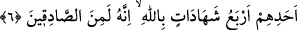

Ey oğul, günah yükünün altına girme
Çünkü yük taşıyanlar yolda çaresiz kalırlar
Paraya ihtiyacı olanlar çarşıya nasıl mal götürürlerse
Cenneti, yanında ibâdet götürenler alır
Devlet kuşu elinden kurtulduysa
Henüz ipin ucu elinde duruyor. Hâsılı ecelin gelip çatmadan amelini düzeltmeye
gayret et.
6. “Eşlerine zinâ isnâdında bulunup da kendilerinden başka şâhidleri olmayanlara
gelince, onların her birinin şâhidliği, kendisinin doğru söyleyenlerden olduğuna dâir
dört defa Allah adına yemin ederek şâhidlik etmesidir.
Yabancı kadınlara zinâ isnâdında bulunanların hükmünü beyandan sonra bu âyetlerde
eşlerine zinâ isnâd edenlerin hükmü beyan edilmektedir.
“Eşlerine” ‘Ey zinâ eden kadın!’, ‘Sen zinâ ettin.’ veya ‘Seni zinâ ederken gördüm.’
diyerek “zinâ isnâdında bulunup da” onlara isnad ettikleri zinâ konusunda
“kendilerinden başka şâhidleri olmayanlara gelince.”
Bahru’l-ulûm’da der ki: “Karı ve koca muhsan oldukları halde koca karısına: “Ey
zinâ eden kadın!” der, kadın da kocasının bu sözüne: “Hayır, bilakis sen zinâ eden
erkeksin!” karşılığında bulunursa kadına had tatbik olunur. Çünkü o kocasına iftirâda
bulunmuştur. Kocanın karısına iftirâ etmesi ise haddi değil liânı gerektirir. Eşine zinâ
isnad eden koca, bu durumu imama (yetkili kimseye) bildirmediği sürece liân vâcib
olmaz.
İbn Abbâs (r.anhümâ) demiştir ki: “Namuslu kadınlara zinâ isnâdında bulunup,
sonra (bunu isbat için) dört şâhid getiremeyenlere…” (en-Nûr, 24/4) âyeti inince
Ensar’dan Âsım b. Adiyy: “İçimizden biri evine varıp hanımının üzerinde bir erkek
görse ne yapmalıdır? Bu olaya şâhidlik etmeleri için dört adam bulup getirmeye uğraşsa
adam işini bitirip gidecektir. Öldürse kendisi de kısasen öldürülecektir. Ben falanı şu
kadınla zinâ ederken gördüm dese iftirâ suçundan dövülecektir. Şâyet sussa bütün bu
öfkesine rağmen susmuş olacaktır. O halde Allah’ım, sen bir çıkış yolu göster!” dedi.
Bahsettiğimiz bu Âsım b. Adiyy’in, Uveym adında bir amca oğlu, onun da Havle b.
Kays adında bir hanımı vardı. Uveym, Âsım’a gelerek “Şerik b. Sehmâ’yı hanımımın
karnının üzerinde gördüm.” dedi. Âsım: “İnnâ lillâh ve innâ ileyhi râciûn” yâni “Biz
Allah içiniz ve O’na döneceğiz.” (el-Bakara, 2/156) dedi ve Rasûlullah (s.a.)’a
gelerek: “Yâ Rasûlallah! Ehl-i beytim hakkında sorduğum sualle ne de çabuk mübtelâ
kılındım” şikâyetinde bulundu. Rasûlullah (s.a.): “Ne oldu?” buyurunca, amcası oğlu